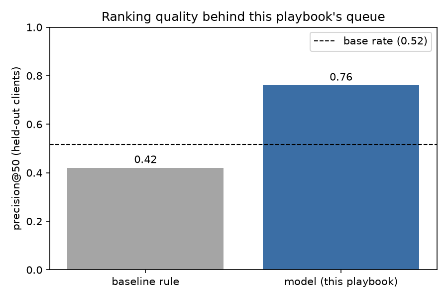
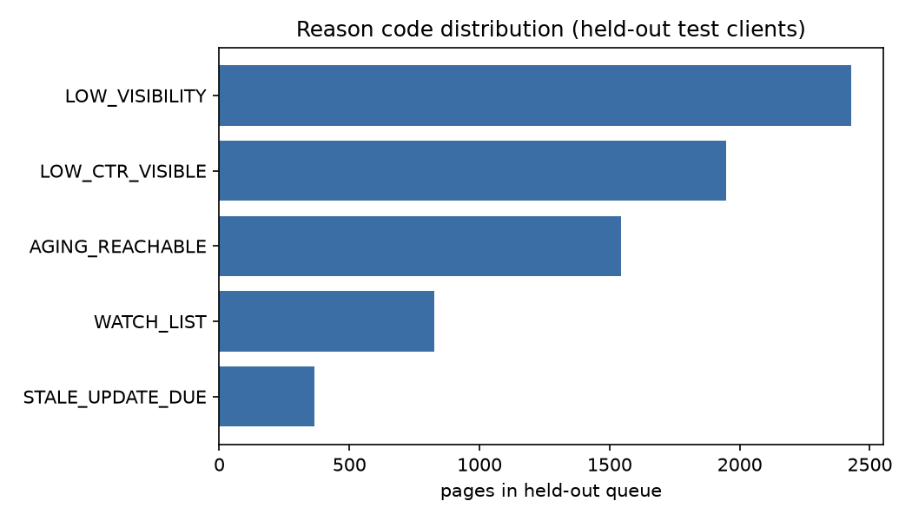

Content reviewers can't inspect every page every month, so the practical question is ordering: which pages earn attention first? We built a page-level opportunity score from search visibility, click-through rate, position, and freshness signals, and compared it against a transparent baseline rule on the same held-out clients. The model puts genuinely at-risk pages in its top 50 76% of the time, versus 42% for the rule it replaces — and a naive random validation split would have overstated that number by 12 points. The result ships as a ranked, reason-coded review queue for a human to work top-down, not as an automated verdict on any single page.
A content team maintaining thousands of pages cannot review all of them on any regular cadence. Someone has to decide which pages get a reviewer's limited time this cycle, and right now that decision usually runs on recency or gut feel, not on the signals that actually distinguish a page worth fixing from one that's fine as-is.
This project treats that decision as a ranking problem: given a page's search visibility, click-through rate, position, and freshness at the time of review, how should pages be ordered so the top of the queue is where the reviewer's time pays off most? We are not trying to explain why Google ranks a page where it does, and we make no claim about the search algorithm itself — only about which observable, pre-decision signals are associated with a page needing attention.
Two FlyRank releases were used, at different stages of the project. All data below is pseudonymized at the client and content level; no client names, domains, URLs, or raw queries appear anywhere in this paper or its supporting notebooks.
A 30,000-row cross-sectional pull (content_refresh_anonymized.csv), one row
per pseudonymized page across 32 pseudonymized clients, 44 columns. The label used
throughout — is_declining_label, derived from a provided
trend_direction field — has a base rate of 0.542. This
is a single snapshot, not a time series; that limitation is carried through the whole
analysis rather than glossed over.
A genuine fact table (fact_content_daily_performance) hosted on Hugging
Face, March 2026 partition: 9.84 million page-day rows across 55 clients and 331,437
content items. Here we built a proper future-window setup — features from the
first half of March, label from the second half — to prove a cleaner label design
is buildable, and to run a deliberate leakage test (see Methodology). The shipped model
does not use this release directly; it uses the starter release's proxy label instead,
for continuity with the baseline built earlier in the project. We name that gap directly
rather than blur the two releases together.
content_id / client_id — used only to group the
train/test split, never as a model input.trend_direction / trend_pct — the source of the
label itself; including them as features would leak the answer.
is_declining_label = (trend_direction == "down"), base rate 0.542. This is
a proxy for "this page may need attention," not a causal or independently verified
outcome — a page can carry this label and still be performing acceptably by other
criteria.
Before modeling anything, we audited two signals for whether they actually moved with the label. CTR against search position was confirmed: the share of low-CTR pages climbs from 0.79 near the top of the results to 0.96 by position 50+. Staleness was mixed: decline rate rises through the 91–180 day freshness window, but reverses in the 181+ day bucket — a bucket with only 174 pages, too small to trust on its own. The baseline rule combines both signals with visibility and reachable position:
baseline_score = visible_band × reachable_position × log(1+impressions_90d) ×
(1 + 0.45·stale + 0.35·low_ctr + 0.25·fresh_age)
A logistic regression (class-balanced) trained on 20 numeric and 8 categorical features — log-scaled traffic and impressions, position, CTR, engagement and scroll rate, content age, days since last update, word count, and tiered versions of several of these — checked against a random forest of similar feature access and against the baseline rule, all three scored on the identical held-out split.
We split by client, not by row: GroupShuffleSplit,
75/25, so no client's pages appear in both train and test. This matters because pages
from the same client share portfolio-level quirks a model can memorize instead of
generalizing from. Training set: 22,885 rows across 24 clients. Test set: 7,115 rows
across 8 clients never seen in training, base rate 0.517.
log_impressions_90d) and
retraining changed average precision by less than a point (0.607 → 0.600) —
no one feature is silently carrying the label.All three methods below are scored on the exact same 7,115 held-out pages, from 8 clients that never appeared in training. Base rate on this test set: 0.517.
| Method | P@10 | P@20 | P@50 | P@100 | Avg. precision | ROC AUC |
|---|---|---|---|---|---|---|
| Logistic regression (shipped) | 0.90 | 0.75 | 0.76 | 0.70 | 0.607 | 0.612 |
| Random forest (complexity check) | 0.50 | 0.40 | 0.54 | 0.57 | 0.590 | 0.605 |
| Baseline rule (no training) | 0.80 | 0.65 | 0.42 | 0.54 | 0.519 | 0.514 |
| Base rate (chance) | — | — | 0.517 | — | — | 0.500 |

Reading the top 50 pages the model flags, 38 of them (76%) are genuinely declining by our proxy label — up from 21 of 50 (42%) for the rule it replaces, on the identical 50-page slot, identical clients, identical split. A random forest with access to the same features did not beat either the logistic regression or, on precision@50, even the simple rule — we tried more complexity and rejected it rather than ship it because it looked more sophisticated.
We also ran the shipped model on a naive random split, the kind of validation that's easy to reach for by default. It reported precision@50 = 0.88, a full 12 points above the honest, client-grouped result. We report only the grouped number in this paper; the gap itself is one of the more useful findings here, and one worth watching for in any future model built on this kind of client-partitioned data.
The held-out predictions feed a five-code priority queue. Sorted purely by model score, the queue surfaces near-dead pages first — 0% CTR, almost no traffic, technically "confidently declining" but with nothing left to recover. Those correctly route to monitor-only. The actionable queue filters those out and sorts what's left by opportunity value, then model confidence — this is the order a reviewer should actually work.
| Reason code | Pages | Recommended action | Effort |
|---|---|---|---|
LOW_CTR_VISIBLE | 1,949 | Rewrite title, meta description, and snippet | low |
STALE_UPDATE_DUE | 367 | Refresh and expand content | medium |
AGING_REACHABLE | 1,543 | Schedule editorial review before the decay window | medium |
LOW_VISIBILITY | 2,429 | Monitor only — not enough demand to prioritize | none |
WATCH_LIST | 827 | No action yet | none |

The 91-day freshness threshold behind STALE_UPDATE_DUE and
AGING_REACHABLE is not arbitrary — it triangulates our own signal
audit (the 91–180 day freshness tier has the highest observed decline rate,
0.611) against FlyRank's own published research, using its more stable 31–90 day
freshness-refresh window rather than a headline number built on a single-page
denominator (see Limitations).
A ranked review queue for a human content reviewer or strategist to work top-down. Not for unattended automation: never auto-publish, auto-delete or deindex, make client-facing guarantees, or bulk-edit from this queue without review — especially on high-stakes or YMYL content. A human still needs to check content accuracy, brand voice, and context the model can't see, such as seasonality, discontinued products, or legal and compliance constraints.
Every number in this paper traces back to a committed notebook or a committed JSON metrics file in the project repository — nothing here is a one-off calculation that can't be re-run.
Split: GroupShuffleSplit by client, 75/25, random_state=42.
Model: LogisticRegression(class_weight="balanced", max_iter=1000).